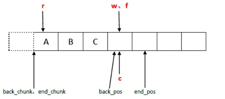

内存池
考虑方面
- 减少内存碎片
- 提高效率
- 避免内存泄漏
内存池考虑
- 线程安全
- 尺寸固定
kfifo的内存池
- ringbuffer_from_dev
应用层协议
- TLV
boost pool
- pfirst管理空闲内存，使用内存踢出去
- 重栽运算符
zmq的内存池
- 传输层和应用层更简单的接口
- 尽量少的申请内存，尽量使用即将释放的内存
- 一个读线程，一个写线程，读写之间使用无锁解决互斥
- 批量写入，预取机制，提高效率
chunk_t
- begin_chunk 读取的块 begin_pos 读取的位置
- back_chunk 写入的块 back_pos 写入的位置
- end_chunk 指向新申请的内存块
- push()只是申请了空间
- chunk_t *sc = spare_chunk.xchg (NULL); 拿取一个值，然后用NULL去填充
- back()是存储了数据
- begin_pos 正在读取的位置 begin_pos = N 时说明已经全部释放了，所以直接使用物理释放
- back_pos 写的位置
inline void pop ()
{
if (++_begin_pos == N) {
chunk_t *o = _begin_chunk;
_begin_chunk = _begin_chunk->next;
_begin_chunk->prev = NULL;
_begin_pos = 0;
//将内存块和空闲内存块进行置换，同时将置换出来的内存块释放掉
chunk_t *cs = _spare_chunk.xchg (o);
free (cs);
}
}
ypipe_t
flush
inline bool flush ()
{
// If there are no un-flushed items, do nothing.
if (_w == _f)
return true;
// Try to set 'c' to 'f'.
if (_c.cas (_w, _f) != _w) {
// Compare-and-swap was unseccessful because 'c' is NULL.
// This means that the reader is asleep. Therefore we don't
// care about thread-safeness and update c in non-atomic
// manner. We'll return false to let the caller know
// that reader is sleeping.
_c.set (_f);
_w = _f;
return false;
}
// Reader is alive. Nothing special to do now. Just move
// the 'first un-flushed item' pointer to 'f'.
_w = _f;
return true;
}
inline void write (const T &value_, bool incomplete_)
{
// Place the value to the queue, add new terminator element.
queue.back () = value_;
queue.push ();
// Move the "flush up to here" poiter.
if (!incomplete_)
f = &queue.back ();
}


read
r指针没有指向begin_pos说明已经预读好了
inline bool read (T *value_)
{
// Try to prefetch a value.
if (!check_read ())
return false;
// There was at least one value prefetched.
// Return it to the caller.
*value_ = _queue.front ();
_queue.pop ();
return true;
}
inline bool check_read ()
{
// Was the value prefetched already? If so, return.
if (&_queue.front () != _r && _r)
return true;
_r = _c.cas (&_queue.front (), NULL);
//_c=NULL, _r->_c的位置
// If there are no elements prefetched, exit.
// During pipe's lifetime r should never be NULL, however,
// it can happen during pipe shutdown when items
// are being deallocated.
if (&_queue.front () == _r || !_r)
return false;
// There was at least one value prefetched.
return true;
}


- f刷新指针